Fabric ML Lifecycle: Success Strategies from Start to Finish Part-3
Focusing on ML Model Training & Evaluation
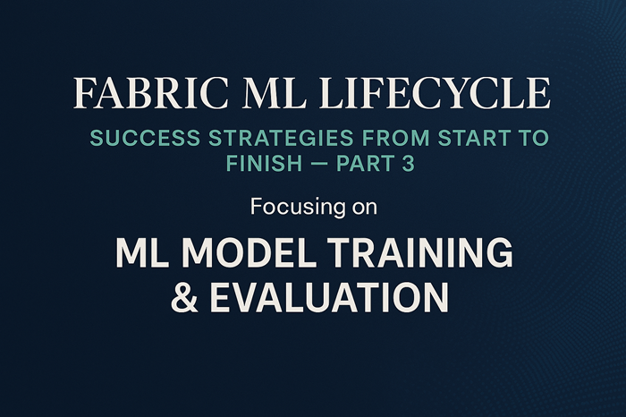
Table of Contents:
- Introduction to the ML Workflow in Fabric: Why structure and sequencing matter in real‑world machine learning.
- Dataset Preparation: Splitting the dataset before defining features and labels to prevent data leakage.
- Feature Engineering & Label Definition: Selecting the right inputs and clarifying the prediction target.
- Model Training: Running experiments and capturing runs with MLflow.
- Model Evaluation: Comparing metrics, visualizing performance, and understanding model behavior.
- Model Registration: Promoting the best model to a governed, versioned asset in the registry.
- Key Takeaways: What this workflow teaches about responsible, production‑ready ML.
- Partnering with Tech-Insight-Group: Your Data Implementation Ally
- Call to action
Stay in the loop, follow us on LinkedIn to catch fresh articles every week.
This blog was inspired by Jean Joseph, a Data & AI driven professional with over tweenty years of experience helping organizations unlock insights through analytics and AI. If you are looking for consulting and training services, please reach out to the Tech-Insight-Group LLC team.
Who is this article for?
These series of article are designed for data professionals, business leaders, and technical teams who want to successfully implement machine learning projects that deliver real business value. Whether you are a data scientist, ML engineer, or decision-maker exploring AI adoption, you’ll benefit from learning a proven, end-to-end strategy from framing the right problem to building and deploying scalable solutions in Microsoft Fabric.
This is a four-part article, and you are currently reading the third part. What is the objective here? It’s to share and remind you how to properly tackle a machine learning (ML) Model Training & Model Evaluation from the ground up.
Prerequisites for Completing This Hands‑On Exercise
- Access to a Microsoft Fabric Tenant: You must have access to a Microsoft Fabric-enabled tenant. If your organization has not enabled Fabric yet, contact your administrator to activate it.
- A Provisioned Fabric Capacity: To run notebooks, Spark workloads, and Lakehouse operations, you need a Fabric capacity (F‑SKU or P‑SKU, trial capacity).
- A Lakehouse in Your Workspace: Create a new Lakehouse where you will store and explore the dataset. This Lakehouse will serve as the foundation for all EDA steps in this article.
- Download and Upload the Pre-processed Dataset: Download the regression_housing_cleaned.csv file provided with this article. Then upload it into the Files section of your Lakehouse so it can be accessed by your notebook.
- A Fabric Notebook: Create a new Fabric Notebook inside the same workspace. You will run all the code snippets from this article inside that notebook using the built‑in Spark runtime.
- Once these prerequisites are complete, you’re ready to follow the hands‑on instructions to perform Model Training and Model Evaluation in Part 3, which will prepare you to deploy the ML model and test it using batch scoring in Part 4.
Introduction
This is the third article in this four‑part series. In Part 1, we explored how to properly frame your machine‑learning problem, validate that ML is the right solution, and choose the appropriate model type once the problem is clearly defined. In Part 2, we shifted our attention to the data itself - how to assess its quality, structure, availability, and readiness to support a successful ML initiative. Now, in this Part 3, we focus on model training, evaluation, and registration, turning your prepared dataset into a fully operational and production‑ready machine‑learning solution. Part 4 will be reserved for batch scoring and prediction.
As Part 3 is solely relying on Model Training and Model Evaluation, it is very important to define what each one is and why they matter. Model training is the process where an algorithm learns patterns from your prepared dataset, adjusting its internal parameters so it can make accurate predictions. Model Evaluation, on the other hand, measures how well that trained model performs on unseen data, helping you understand whether it generalizes beyond the examples it learned from.
Both steps are essential because training without evaluation risks building a model that only memorizes the data, while evaluation without proper training provides no meaningful insight. Together, they ensure your machine‑learning solution is not only accurate but also reliable, scalable, and ready for real‑world deployment. Enough talk - now let’s go over the Dataset Introduction narrative.
Dataset introduction (short narrative)
if you recalled, regression_housing_cleaned.csv represents the finalized version of the housing dataset after completing the full data‑preparation workflow in Part 2, as you can see from the screenshot below. Starting from the raw source, the dataset went through exploratory data analysis (EDA) to identify missing values, outliers, skewed distributions, and categorical variables requiring transformation.
Categorical features were then converted into machine‑readable form using one‑hot encoding, and all numeric columns were standardized to ensure consistent scale for downstream modeling. The result is a clean, structured, and fully model‑ready dataset that will serve as the foundation for the regression experiments in the next phase.
# Load cleaned housing dataset into a Spark DataFrame
df_selling_housing = spark.read.csv(
# Path to the cleaned regression housing CSV folder
"Files/csv/ml/cleaned/regression_housing_cleaned",
header=True, # Use first row as column headers
inferSchema=True # Automatically detect column data types
)
# Preview a small sample of the dataset
display(df_selling_housing.limit(5))
# Inspect full schema to verify structure and data types
df_selling_housing.printSchema()
Model Training
As our cleaned dataset is ready to go, let us start training the ML model by setting up the foundation every reliable workflow depends on: splitting the data. The first step is to divide the dataset into a training set, where the model actually learns patterns, and a test set, which we hold back to measure how well the model performs on completely unseen data. This separation protects us from overfitting and gives us a realistic sense of how the model will behave once deployed.
In some cases, we might also introduce a validation set - a third slice of the data used during model development to tune hyperparameters, compare model variants, and make design decisions without touching the final test set. This keeps the test set truly unbiased and ensures our evaluation remains trustworthy.
Let us explain the code below. The below code is used to train the ML model by first creating the essential train/test split. Since Spark DataFrames aren’t directly compatible with scikit‑learn utilities, we convert our cleaned dataset to a pandas DataFrame before proceeding. From there, we divide the data into two subsets: 70% for training, where the model learns underlying patterns, and 30% for testing, which we reserve for evaluating how well the model generalizes to unseen data. Printing the row counts helps confirm that the split occurred exactly as expected.
A concise breakdown of what the code below is doing:
- train_test_split: A utility from sklearn.model_selection that randomly splits your dataset into training and test subsets.
- X: The feature matrix (independent variables) used by the model to learn patterns.
- y: The target vector (dependent variable) the model is trying to predict.
- test_size=0.30: Specifies that 30% of the dataset should be allocated to the test set, leaving 70% for training.
- random_state=0: Ensures reproducibility. Using the same random state guarantees the split will be identical each time the code runs.
Resulting variables:
- X_train: training set features
- X_test: test set features
- y_train: training set target
- y_test: test set target
from sklearn.model_selection import train_test_split
df_selling_housing = df_selling_housing.toPandas()
# Split the dataset into training and testing sets
# The data is split into two sets: 70% for training and 30% for testing
train, test = train_test_split(df_selling_housing, test_size=0.3, random_state=0)
# Print the number of rows in the training and testing sets
# This helps to verify the split and ensure that the data is divided as expected
print("Training Rows:", len(train), "Testing Rows:", len(test))
The below screenshot is the output of the above code that clearly shows the amount of data allocated to each subset: 700 rows for training and 300 rows for testing, confirming the 70/30 split.
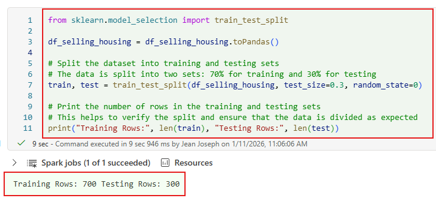Defining the Inputs (Features) and the Output (Label)
Now that we have our training and test sets in place, it’s time to define the features and the label. The two core ingredients every supervised ML model relies on. Features are the input variables the model uses to learn patterns, such as square footage, number of bedrooms, or neighborhood.
The label is the single output we want the model to predict, like the selling price. Getting this distinction right sets the stage for a clean, well‑structured modeling workflow and ensures the algorithm knows exactly what to learn from and what to predict.
Quick explanation of what this code is doing: it defines feature_cols as the full list of input variables (Features) the model will learn from, and label_col as the single output variable (Label). Using the previously created train and test splits, it extracts those feature columns into X_train and X_test, and pulls the label into y_train and y_test. The final print statement confirms the number of rows in each set so you can verify that the feature and label arrays align with the original 70/30 dataset split.
import pandas as pd
from sklearn.model_selection import train_test_split
# Assume df_selling_housing is already defined
# Define feature columns (all except 'price')
feature_cols = [
"beds", "baths", "sqft", "built_year", "lot_acres", "has_garage",
"has_renovation",
# city one-hot columns
"city_Arlington", "city_Boston", "city_Charlotte", "city_Denver",
"city_Edison", "city_Fresno", "city_Grand Rapids", "city_Houston",
"city_Idaho Falls", "city_Jacksonville",
# neighborhood one-hot columns
"neighborhood_Downtown", "neighborhood_Rural", "neighborhood_Suburban"
]
# Target column
label_col = "price"
# =========================
# Feature selection: Extract the features (independent variables)
# =========================
X_train = train[feature_cols].values
X_test = test[feature_cols].values
# =========================
# Target selection: Extract the target (dependent variable)
# =========================
y_train = train[label_col].values
y_test = test[label_col].values
print('Feature and target selection done')
print("Training Rows:", len(X_train), "Testing Rows:", len(X_test))
As shown in the output, the feature sets contain 700 training rows and 300 testing rows, perfectly matching the 70/30 split we applied after defining our features and label.
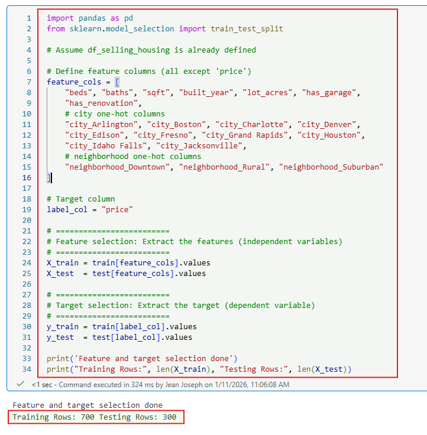Model tracking with MLFlow
So far, we’ve split the dataset and defined our features and label, now it’s time to train the model. But before we go too deep into modeling, it’s critical to establish a robust experiment tracking framework, and that’s where MLflow comes in. MLflow lets us log every aspect of the model lifecycle: parameters, metrics, artifacts, and even the model itself. This ensures reproducibility, auditability, and comparability across multiple runs.
From a technical standpoint, MLflow integrates seamlessly with scikit-learn, XGBoost, PyTorch, and other frameworks. During training, we can use mlflow.start_run() to initiate a tracking session, then log hyperparameters with mlflow.log_param(), performance metrics like RMSE or R² with mlflow.log_metric(), and persist the trained model using mlflow.sklearn.log_model() or the appropriate flavor.
Artifacts such as plots, confusion matrices, or preprocessing pipelines can be stored with mlflow.log_artifact(). Each run is automatically versioned and stored in the MLflow backend, whether that’s local, on a remote server, or integrated with cloud platforms like Azure ML, Microsoft Fabric or Databricks.
This setup not only helps us compare model variants but also supports collaboration, rollback, and deployment readiness. In short, MLflow transforms ad hoc experimentation into a structured, production-grade workflow.
The good news is, MLflow does integrate smoothly with Microsoft Fabric, giving you native support for experiment tracking, parameter and metric logging, artifact storage, model registration, and deployment directly from Fabric notebooks, but there are several technical considerations to keep in mind to use it effectively.
All tracking is workspace‑scoped, meaning runs live inside the Fabric workspace and switching workspaces changes the tracking server, so teams must coordinate where experiments are executed. Artifacts are stored in OneLake, which requires attention to storage quotas, naming conventions, and cleanup. The Model Registry is MLflow‑compatible but governed by Fabric permissions and workspace‑level promotion workflows.
Because Fabric notebooks run on managed Spark compute, some MLflow flavors may not be available, library dependencies must be validated, and long‑running jobs should be monitored for session timeouts. For deployment, Fabric supports both batch scoring and real‑time endpoints, but you must plan for scaling, authentication, versioning, and monitoring. And while Fabric includes its own MLflow backend, connecting to an external MLflow server (such as Databricks, Azure ML, or a self‑hosted instance) requires manual tracking URI configuration and appropriate network access.
Let us now have a taste of MLflow, this snippet sets the stage for experiment tracking by importing MLflow, defining a dedicated experiment name, and registering it so every training run, metric, and parameter that follows is automatically captured and organized under a single experiment.
# Import the MLflow library
import mlflow
# Define the name of the experiment
experiment_name = "selling-houseing-exp-job"
# Set the experiment in MLflow
mlflow.set_experiment(experiment_name)
After executing the above code, the output confirms that MLflow successfully created a new experiment named "selling-houseing-exp-job" and registered it for tracking, ensuring that all future runs, parameters, metrics, and artifacts will be logged under this experiment.
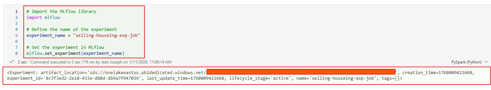Trains a regression model using Linear Regression
During Model Training, it’s always ideal to experiment with multiple algorithms to find the best fit for your dataset and business problem. Each model behaves differently depending on feature interactions, noise levels, and data patterns.
For this demo, we’re manually comparing just two models (Linear Regression and Decision Tree Regressor), but in real‑world scenarios I strongly recommend leveraging AutoML, which is fully supported in Microsoft Fabric and can automatically evaluate dozens of algorithms, tune hyperparameters, and select the most accurate model for you.
To proceed with training a Linear Regression Model, we will use below code and this code imports the LinearRegression class, enables MLflow’s automatic logging so every parameter, metric, and model artifact is captured, and then starts an MLflow run where the model is instantiated and fitted on the training data. Inside the run, the model learns the relationship between the features and the target, and a custom parameter (estimator = LinearRegression) is logged so the experiment record clearly reflects which algorithm was used.
# Import the LinearRegression class from scikit-learn
from sklearn.linear_model import LinearRegression
# Enable automatic logging of parameters, metrics, and models with MLflow
mlflow.autolog()
# Start an MLflow run
with mlflow.start_run():
# Initialize the LinearRegression model
model = LinearRegression()
# Fit the model to the training data
model.fit(X_train, y_train)
# Log a custom parameter to MLflow
mlflow.log_param("estimator", "LinearRegression")
The output shows that a new MLflow run named busy_receipt_f5txcwtg was successfully tracked under the experiment selling-houseing-exp-job.
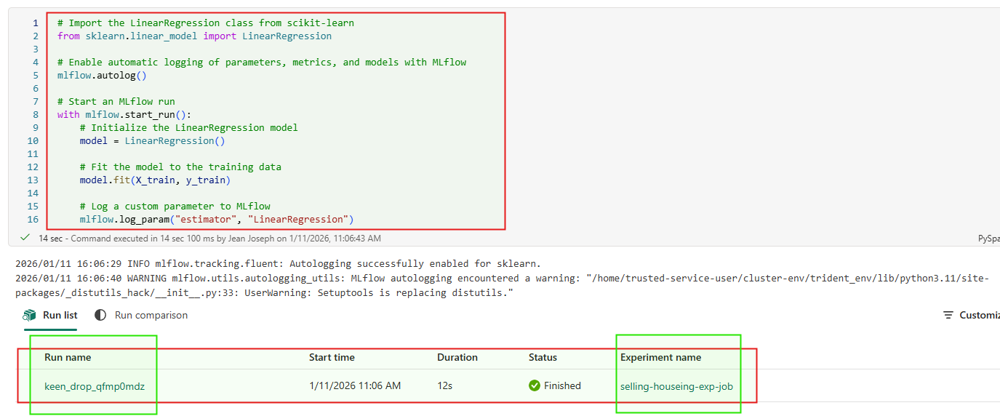Now, let’s train the ML model using a Decision Tree Regressor and compare its performance with our earlier Linear Regression model to determine which one performs better. This below code is simply training a Decision Tree Regressor under an MLflow‑tracked experiment run: it imports the algorithm, enables MLflow autologging, starts a new run, fits the model on the training data, and records the model choice as a logged parameter so it can be compared against other models later.
# Import the DecisionTreeRegressor class from scikit-learn
from sklearn.tree import DecisionTreeRegressor
# Enable automatic logging of parameters, metrics, and models with MLflow
mlflow.autolog()
# Start an MLflow run
with mlflow.start_run():
# Initialize the DecisionTreeRegressor model with a maximum depth of 5
model = DecisionTreeRegressor(max_depth=5)
# Fit the model to the training data
model.fit(X_train, y_train)
# Log a custom parameter to MLflow
mlflow.log_param("estimator", "DecisionTreeRegressor")
The output shows that the Decision Tree model training completed successfully and MLflow recorded it as a new run under the same experiment name, "selling-houseing-exp-job". This confirms that even though we switched to a completely different algorithm, MLflow kept everything organized within one experiment, allowing us to compare both models side‑by‑side in a single, consistent tracking space.
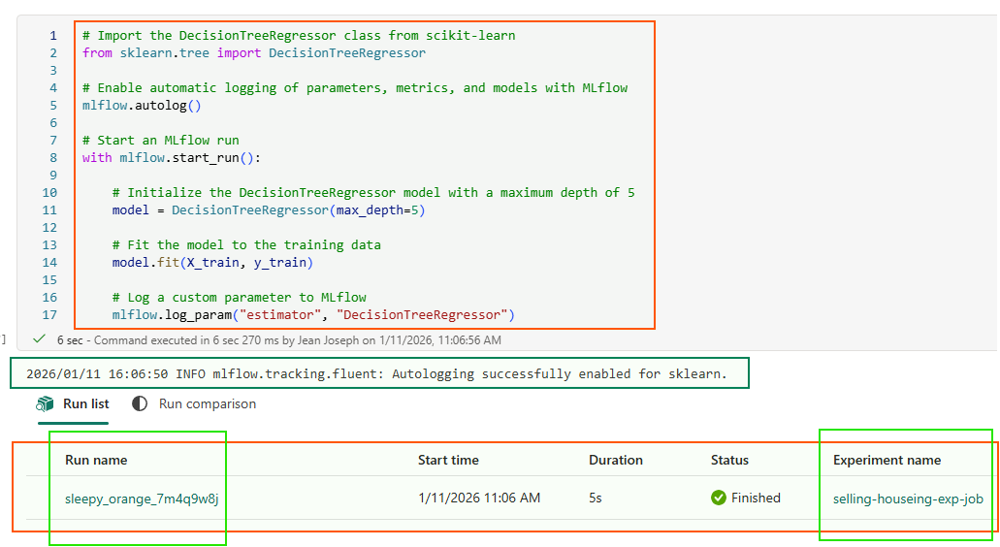Evaluating Linear Regression and Decision Tree Regressor Performance
Model evaluation is essential to measure how well a trained model performs on unseen data, ensuring it generalizes accurately and supports reliable decision-making.
This below code retrieves the two most recent MLflow runs from the experiment and extracts key metrics to compare model performance. Let us go and execute the code.
# Define the name of the experiment
#experiment_name = "experiment-diabetes"
# Retrieve the experiment details by its name
exp = mlflow.get_experiment_by_name(experiment_name)
# Print the experiment details
print(exp)
# Search for all runs in the specified experiment
mlflow.search_runs(exp.experiment_id)
# Search for the most recent two runs in the specified experiment, ordered by start time in descending order
runs_df = mlflow.search_runs(exp.experiment_id, order_by=["start_time DESC"], max_results=2)
# Select only the important columns for model comparison
metrics_df = runs_df[[
"run_id",
"status",
"start_time",
"end_time",
"tags.estimator_name",
"metrics.training_score",
"metrics.training_mean_absolute_error",
"metrics.training_r2_score",
"metrics.training_mean_squared_error"
]]
metrics_df
The output comparison between Linear Regression and Decision Tree Regressor reveals clear performance differences:
- Linear Regression achieved a higher R² score of 0.896, indicating it explains nearly 90% of the variance in the target variable, compared to 0.756 from Decision Tree Regressor.
- It also had a significantly lower Mean Absolute Error (53,739) versus Decision Tree’s 86,211, meaning its predictions were closer to actual values on average.
- The training score and R² score are identical for each model (as expected for scikit-learn regressors), reinforcing that Linear Regression provided a better overall fit.
- Both models were tracked under the same MLflow experiment (selling-houseing-exp-job), allowing seamless side-by-side evaluation using tags.estimator_name and key metrics.
Conclusion: Based on training performance, Linear Regression outperformed Decision Tree Regressor for this dataset.

If you prefer a visual way to compare model performance, this code generates a bar chart of R² scores for the most recent two MLflow runs. It pulls the metrics.training_r2_score and params.estimator from up to five runs, then plots each estimator’s score side-by-side. This makes it easy to see which algorithm achieved the best fit, higher bars mean better predictive accuracy. It’s a quick, intuitive way to spot the top-performing model at a glance.
import matplotlib.pyplot as plt
# Assuming df_results contains the evaluation metrics for multiple models
df_results = mlflow.search_runs(exp.experiment_id, order_by=["start_time DESC"], max_results=5)[["metrics.training_r2_score", "params.estimator"]]
# Create a bar plot to visualize the R2 scores by estimator
fig, ax = plt.subplots()
bars = ax.bar(df_results["params.estimator"], df_results["metrics.training_r2_score"])
# Add labels above each bar
for bar in bars:
yval = bar.get_height()
ax.text(bar.get_x() + bar.get_width()/2, yval, round(yval, 2), ha='center', va='bottom')
ax.set_xlabel("Estimator")
ax.set_ylabel("R2 Score")
ax.set_title("R2 Score by Estimator")
# Display the plot
plt.show()
The output confirms that R² scores for each estimator were successfully visualized in a bar chart.
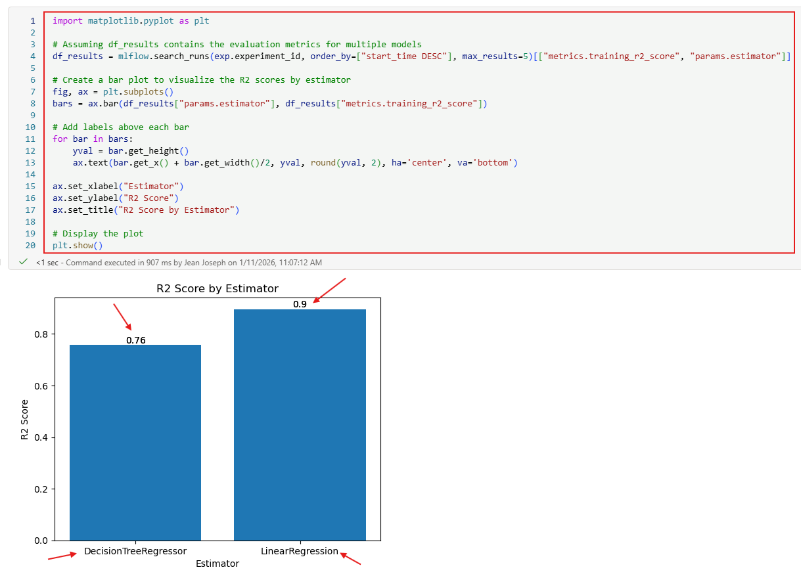To summarize, model evaluation is the step that tells you how well your model truly performs and whether its predictions can be trusted in real‑world scenarios. What we did here was a simplified demonstration, comparing two algorithms and reviewing a few core metrics, but in real projects the evaluation process is far more extensive. It involves deeper validation techniques, fairness and bias checks, robustness testing, monitoring over time, and alignment with Responsible AI principles to ensure models are not only accurate but also ethical, transparent, and safe to deploy.
ML Model Registration
Consider we are happy with the model evaluation, what comes next is ML model registration, and this step matters far more than people often realize. Model registration is the moment where your “best” model stops being just a file in your notebook and becomes an officially tracked, versioned, and governed asset in your ML lifecycle.
It gives you a single source of truth for which model is approved, which version is in use, who created it, and how it performed. This is critical for collaboration, reproducibility, auditing, and smooth deployment. In other words, registration transforms a good model into a production‑ready model that your organization can trust and manage over time.
Now, let us start with the ML Model Registration in Farbic. This below code retrieves the most recent MLflow run, extracts its run ID, and then registers the model saved inside that run into the MLflow Model Registry. It essentially takes the best-performing run you want to keep and turns its model into a versioned, trackable asset.
# Get the most recent experiment run
exp = mlflow.get_experiment_by_name(experiment_name)
last_run = mlflow.search_runs(exp.experiment_id, order_by=["start_time DESC"], max_results=2)
last_run_id = last_run.iloc[1]["run_id"]
# Register the model that was trained in that run
print("Registering the model from run:", last_run_id)
model_uri = "runs:/{}/model".format(last_run_id)
mv = mlflow.register_model(model_uri, "diabetes-model-community-demo")
print("Name: {}".format(mv.name))
print("Version: {}".format(mv.version))
This output confirms that your trained model was successfully registered in the Fabric-integrated MLflow Model Registry under the name regression_selling_housing_demo, and it was assigned version 1.
If the model name had already been registered, MLflow would have triggered a status_code: 400 error due to a naming conflict. However, MLflow handles this gracefully by automatically creating a new version for example, version 2 under the same model name. So even when the name is already in use, the registration still succeeds as a new version, ensuring smooth version control and traceability.
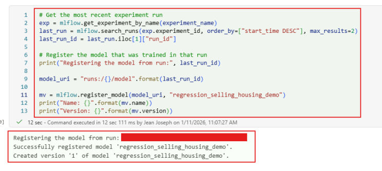After registration, the model becomes visible in your Microsoft Fabric workspace under the ML model type, just like you see in the screenshot. It appears alongside other assets with metadata such as:
- Model name (e.g., regression_selling_housing_demo)
- Workspace location (e.g., live-demo)
- Git status (e.g., Uncommitted)
- Type (e.g., ML model)
This confirms that the model is now a governed asset in your workspace, ready for version tracking, access control, and future deployment. You can now use it for batch scoring, compare it with other models, or promote it into a deployment pipeline.
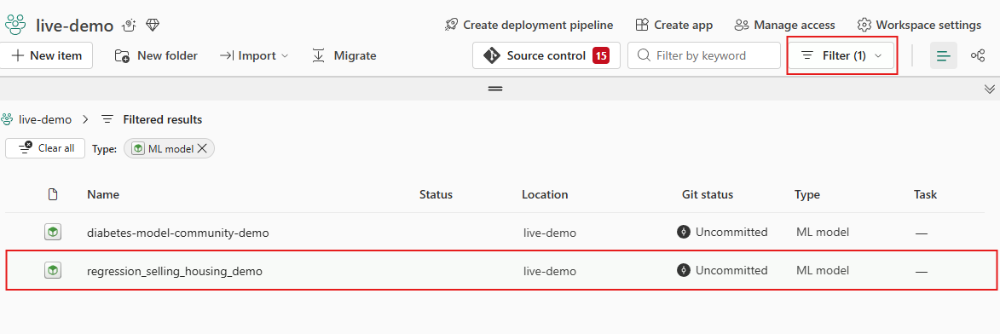Clicking on the ML model registration takes you directly into the model’s detailed, where you can explore everything that MFLow in Microsoft Fabric captures for you like the model’s metadata, performance metrics, version history, training parameters, and even the available deployment options. This is the central place where each registered version becomes a fully traceable, governed asset in your workspace.
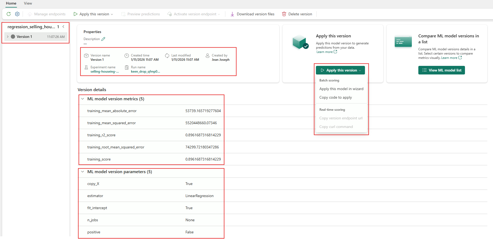If you click on the View tab, then click on ML model list, you’ll be taken to a detailed page that shows metric comparisons, training details, and full model versioning information. This view lets you quickly inspect each version’s performance metrics, review the parameters used during training, and understand how the model evolved across experiments.
This view ensures that each model version is fully traceable, reproducible, and ready for deployment and making it easy to compare versions and promote the best one to production. Let me know if you’d like to turn this into a caption, article paragraph, or LinkedIn post.
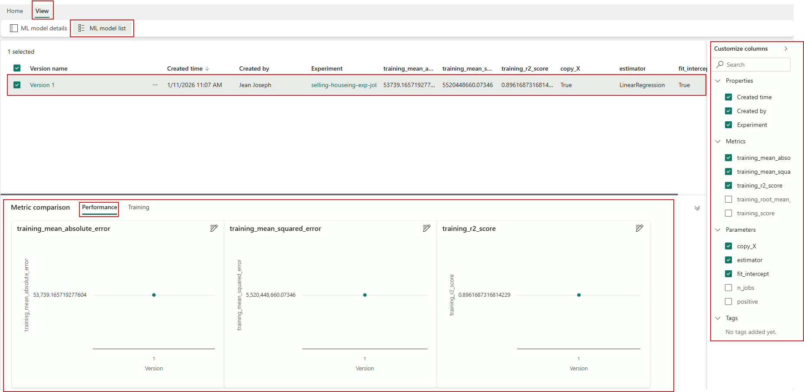To summarize, Model registration simply stores your trained model in the Fabric Model Registry as a versioned, governed asset. It gives you:
- A single source of truth for all model versions
- Metadata, lineage, and evaluation history
- Traceability for audits and Responsible AI
- A clean handoff point between data scientists and ML engineers
Registration = “This model is approved and ready to be used.”
Key Takeaway:
A reliable ML workflow starts with splitting your dataset before defining features and labels, ensuring that your model never “peeks” at the test data. From there, evaluating model performance, comparing metrics, and registering the best model are essential steps that prepare you for responsible, production‑ready machine learning. Deployment comes next, and we’ll cover that in Part 4 during the testing phase.
Call To Action
💡 Ready to Take the Next Step?
If you’re reading this to kick off your first AI, Data project, streamline your current workflow, or upskill your team for what’s next. Tech-Insight-Group LLC is here to help. We specialize in turning AI potential into practical impact through expert consulting and hands-on training. Visit our services page to explore how we can support your journey from strategy to execution. Let’s build something extraordinary together.
🙏 We welcome your feedback, let’s connect.
Thank you for reading Fabric ML Lifecycle: Success Strategies from Start to Finish Part-3 Focusing on ML Model Training & Evaluation
Kudos to our entire team for their dedication, and a special shoutout to Jean Joseph, our Principal Data & AI Architect, whose vision and technical leadership made this work possible.